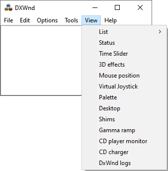
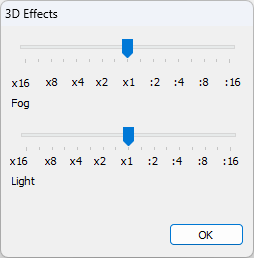
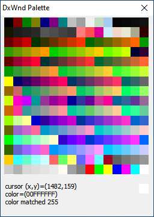
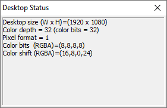
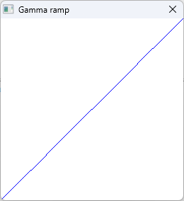

|
List |
Select between icon and detailed listing of programs. |
|
Status |
See Status. |
|
Time Slider |
See Time Slider. |
|
3D effects |
In certain cases, DxWnd can allow to change the intensity of fogging and lightning effects in 3D scenes. This command enables a configuration panel that, through sliders, allows to define the desired effect intensity.  |
|
Mouse position |
Shows the position of the mouse fixed by the DxWnd hacks. See Mouse position. |
|
Virtual joystick |
Shows the status and allows the tuning of some parameters of the DxWnd virtual joystick. See Virtual joystick. |
|
Palette |
This command shows a window that displays the 256 colors in the current emulated palette, refreshing them once per second:  |
|
Desktop |
Shows a window that displays some information about the desktop's display settings, including its size, color depth, pixel format, color bits, and color shift.  |
|
Shims |
Shows a window that displays the list of Windows shims applied to the selected executable. For more information on shims, see the related Wikipedia article. |
|
Gamma ramp |
Shows a window that displays the gamma ramp of the program.  |
|
CD player monitor |
Shows the status of the DxWnd CD-DA player emulator. See CD Player. |
|
CD charger |
Shows the status of the DxWnd CD Charger. See CD charger. |
|
DxWnd logs |
Shows the logs of the "dxwnd.exe" GUI program. This log is enabled when the Options > Global settings > Debug mode flag is set and is written in the "dxwnd.gui.log" file. The log file is created in the DxWnd installation folder and overwritten at each DxWnd new run.
|
 It is important to know that this log doesn't hold information about the target program, but only about
the "dxwnd.exe" program itself. So, when trying to analyze the behavior of some program and an user is asked to collect the
log files, it is necessary to refer to the program's logs (see
It is important to know that this log doesn't hold information about the target program, but only about
the "dxwnd.exe" program itself. So, when trying to analyze the behavior of some program and an user is asked to collect the
log files, it is necessary to refer to the program's logs (see